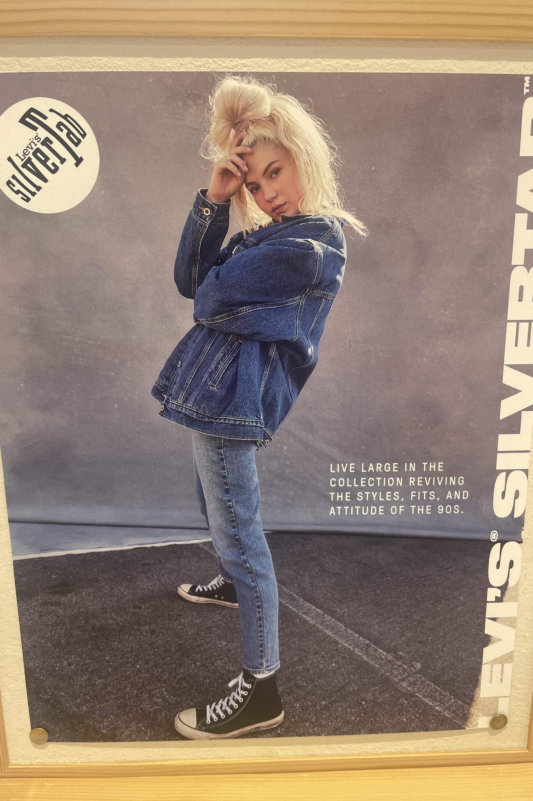
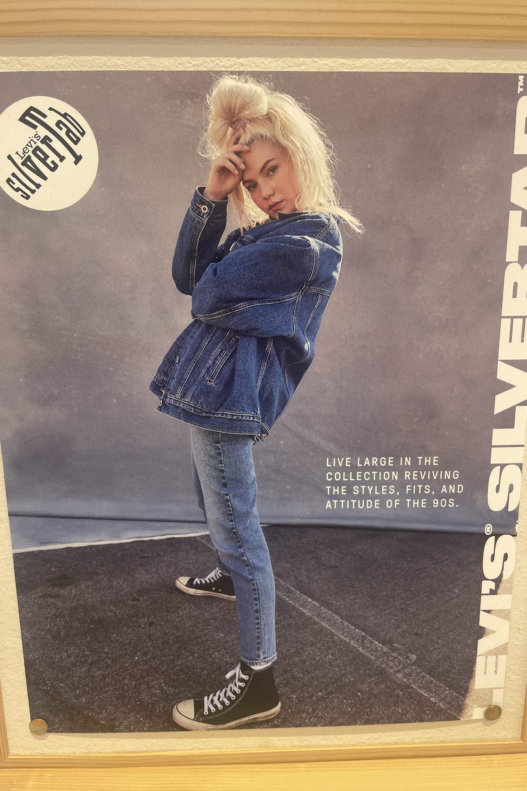

About Me
Welcome to my website! I'm Sun Aroch, a New York City-based senior at Barnard College, majoring in computer science. As a software developer and musician, I am constantly exploring the intriguing intersections of technology and music. Through playing both drums and guitar, music has always been an integral part of my life. I also thrive in the world of programming, with experience in languages such as Java, C, Python, HTML, and Sonic Pi. This unique blend of technical skills and artistic sensibilities allows me to create captivating and innovative experiences. Apart from my love for computer science and music, I also find inspiration in the realm of fashion and modeling. New York City's vibrant environment serves as a constant source of creativity and motivation for me. Join me on this journey as I strive to make meaningful contributions and embrace the exciting possibilities that lie ahead.
email: arochsun@gmail.com
Computer Science
I have been studying computer science for almost 4 years. Throughout my time at university, I have taken classes in several topics such as user interface design, computational sound, and backend development. Here are some links and descriptions of projects that I have worked on:
Music
Modeling

 
